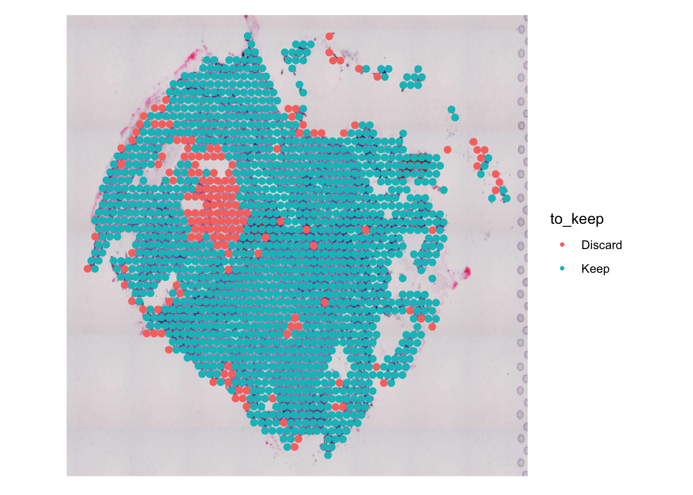
Quality Control
Objectives 🎯
- Data normalization and filtering
- Normalize and explore the data with functions provided by the
SeuratandGiottopackages - Visual exploration of QC metrics over the sample
Overview
As in all bioinformatics analyses, we need to make sure that the data we are analyzing is as sound as possible. Biological data is especially noisy and chaotic by its very nature, hence it is important to perform proper quality control (QC) steps and filtering.
Why filter?
Filtering can help remove low-quality cells/spots that would otherwise introduce technical noise. For example, the presence of spots with lower numbers of features detected than other good quality spots can badly influence the clustering into groupings driven by total expression detected (UMIs) rather than by actual transcriptional content. Spots can also be considered low quality if they show signs of being poorly representative of the biological activity being studied. Some examples are cells that are actively dying (high mitochondrial gene expression) or observations that are actually doublets (in the case of single cell RNA-seq or imaging-based technologies). Removing these sources of non-relevant variation represents a key step for downstream analyses, improving the ratio of biological signal relative to technical noise.
Special considerations with spatial data
while filtering is beneficial in all usual single-cell analyses, spatial data requires an additional level of consideration. Removing a poor quality cell from a spatial network corresponds to removing a data point from its native environment.
🚨 If done without proper caution, this could damage our understanding of spatial niche makeup and cell-cell crosstalk!
QC Thresholds
Filtering can be performed in many ways and using combinations of covariates to make sure we are retaining cells/spots we think are interesting for the sake of the analysis. Take note that this is a very analysis-based step! In our case, we are going to filter spots based on the amount of genes they encode and their total UMI content.
💡 To get a feeling for what could be sensible thresholds to use for filtering, we have to get an idea of the average UMIs and genes!
Q1. Go ahead and compute the average UMI value and gene values per spot, what are these values?
Filtering
Once we have our filtering values sorted out, we need to actually filter our bad spots. Firstly though, since we are dealing with spatial data, we want to check whether the filtering we are applying could end up tampering with the original spatial organization of the sample!
Q2. Determine a quantile-based approach to filter spots based on the nCount_Visium10X and nFeature_Visium10X columns, keeping only spots above the 10% percentile for both measures (let’s call them genesq for the number of genes and umisq for the number of counts, we’ll use these later!) - hint: use the quantile function.
Q3. Compute an additional meta.data column named to_keep which contains values Keep or Discard. If a spot passes QC then gets assigned a Keep else it is flagged by a Discard. (hint: check out the mutate and ifelse function to create the column)
Q4. Plot the new column over the sample and check where spots that would be discarded are located
Q5. How many spots would be filtered out?
Once we are done, we can actually filter the sample!
sp <- subset(sp, subset = to_keep == 'Keep')💡 Did the filtering actually returned the expected amount of spots?
Normalization
After the removal of unwanted spots from the dataset, it’s time to normalize it. What this step tries to achieve is the removal of unwanted differences across spots given by their varying library sizes. More specifically, we use the NormalizeData function from Seurat that normalizes the feature expression measurements for each cell by the total expression, multiplies this by a scale factor (10,000 by default) and log-transforms the result. Normalized expression values are then stored in sp[["RNA"]]$data.
- Use the
NormalizeDatafunction fromSeuratto normalize the expression levels in our sample
sp <- NormalizeData(sp, normalization.method = "LogNormalize", scale.factor = 10000)Selection of Highly-variable features
Now that we have our filtered dataset, we are ready to start working on the spots at the transcriptional level. First, we want to subset our counts matrix to retain information coming from genes which show interesting patterns in the data, in other words we want to keep genes which vary across our spots, since those should be the interesting ones!
To do so, try to implement the following steps in your code:
Q6. Use the FindVariableFeatures function from the Seurat package to detect highly-variable genes in the data and keep the top 4,000 genes using the vst method
Q7. Check which are the top 10 most variable genes in the data (hint: try a combination of the head and VariableFeatures function)
Q8. Plot the names of the top 50 highly-variable genes like shown below (hint: use the VariableFeaturePlot function)
# Top 10 most highly variable genes?
top10 <- NULL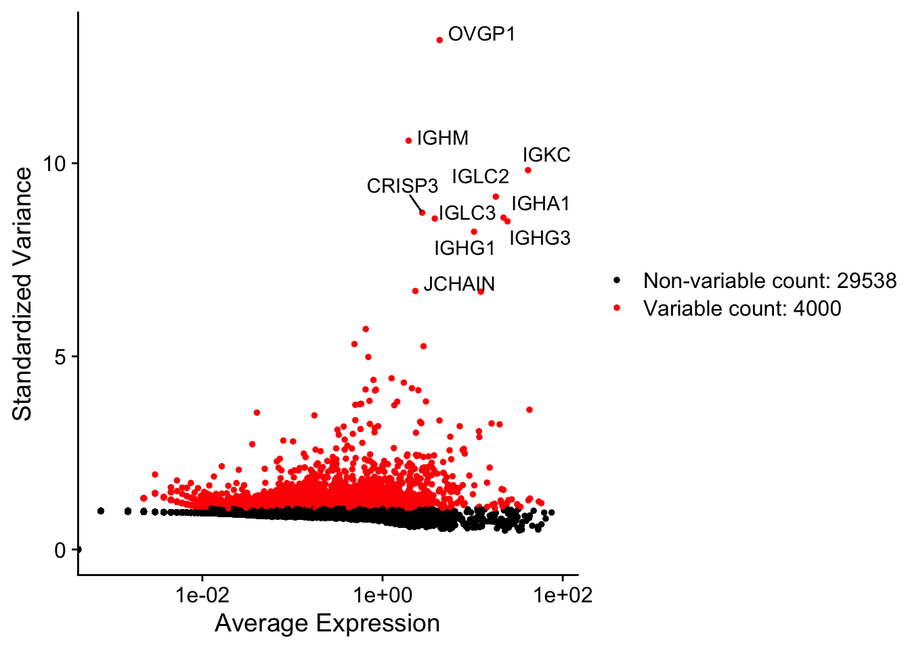
💡 Selecting HVGs is really only a trick to enhance the signal coming from the inner variability of the data, we are not discarding any information as all genes are available to us all the time anyways!
Clustering (spatially-unaware)
Clustering allows us to group spots together based on transcriptional similarity! In order to achieve this, we have to first perform a set of steps beforehand to prepare the data for the clustering algorithm we will use.
First, we apply a linear transformation (‘scaling’) that is a standard pre-processing step prior to dimensionality reduction techniques like PCA. The ScaleData() function:
- Shifts the expression of each gene, so that the mean expression across cells is 0
- Scales the expression of each gene, so that the variance across cells is 1
- This step gives equal weight in downstream analyses, so that highly-expressed genes do not dominate
- The results of this are stored in pbmc[[“RNA”]]$scale.data
- By default, only variable features are scaled.
Follow along and perform these steps in your code:
Let’s scale the data
sp <- ScaleData(sp)We then perform linear dimensionality reduction with PCA. In this case we want to isolate the axes of variation in the data, for each cell we will have new “metafeatures” in the form of Principal Components (PCs) which are linear combinations (think of it as a summary) of the contribution of the original genes of that cell!
# Perform PCA on HVGs
sp <- RunPCA(sp, features = VariableFeatures(object = sp))Q9. How many PCs are computed by default?
Q10. Which are the top 10 genes contributing to the first 3 PCs (based on their loadings, hint: use the VizDimLoadings function)?
Great! We can now plot our spots in PCA space:
# Plot PC1 vs PC2
DimPlot(sp, reduction = "pca") + NoLegend()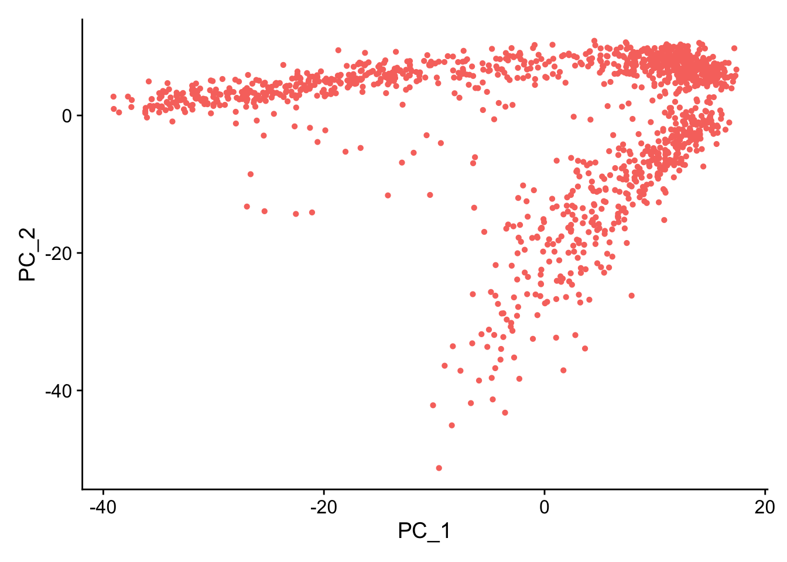
Q11. Now plot the PC score of each spot directly on the tissue in space (hint: this is stored in the sp@reductions$pca slot), to see whether there is a correlation between principal component and tissue location (like shown below), what do you expect?
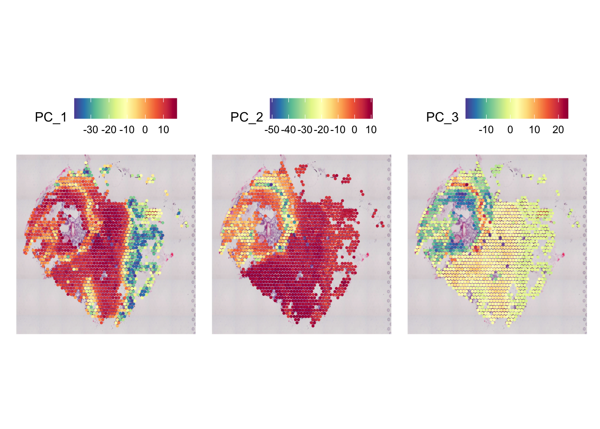
💡 If you are interested in exploring the relationship between cells, PCs and genes, try out the
DimHeatmapfunction!
Which will be the “dimensionality” of our data?
In order to overcome the technical noise in the data and highlight sources of relevant biological variation, we evaluate the transcriptional similarity of cells based on their “summarized” gene expression, in other words based on their principal components! But how can we decide how many components we should retain (out of the default ones)? 10? 15? Maybe 20? 🤔
In order to choose we can generate what is known as an Elbow plot, a heuristic method by which we select the number of PCs based on the percentage of variance explained by each one. In other words we retain PCs which “summarize” better the variability within the data, discarding ones which instead relate more to subtle technical variation.
ElbowPlot(sp)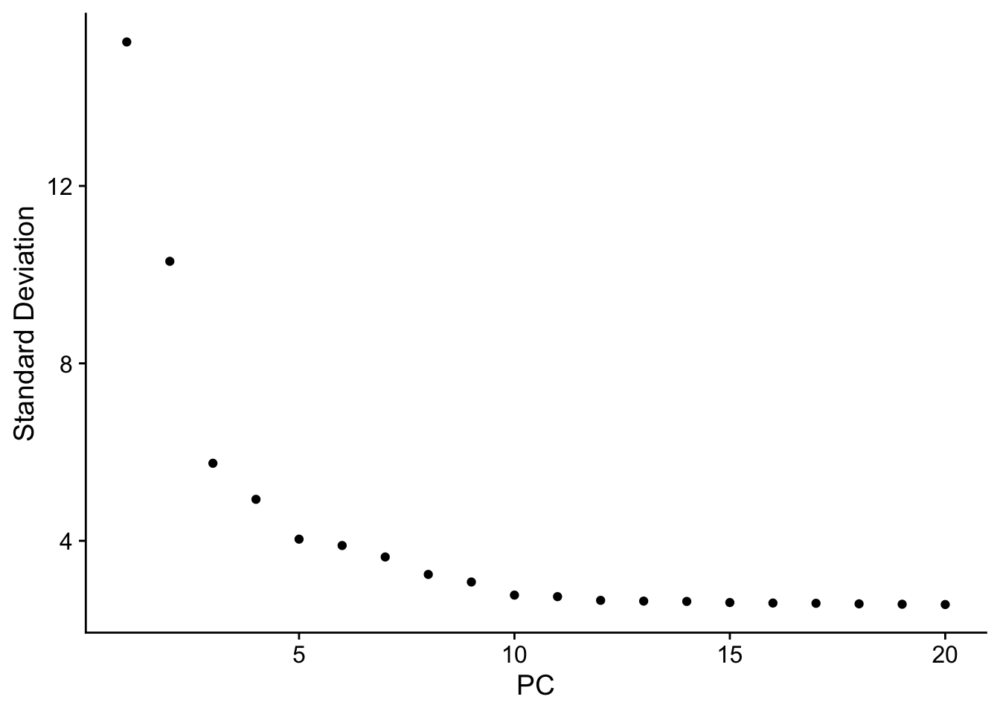
Q12. Draw an elbow plot yourself (hint: use the convenient ElbowPlot function)
- How many PCs will you choose based on the plot? Would it make sense to pick 10?
Non-linear representation of the data (UMAP/t-SNE)
Linear representation of the data are very useful to perform interpretable dimensionality reduction, nevertheless one might want to visually represent (and only that!) the data in a meaningful manner that preserves the transcriptional cell-cell similarity. Methods like UMAP (Uniform Manifold Approximation and Projection) aim to do exactly this, they group together trancriptionally similar cells in a 2D plane, though sacrificing the representation of the global data structure.
The first thing that we want to do is select the amount of PCs that we want to use to compute the transcriptional neighbors of each spot (i.e. other spots which have a very similar PCs profile). You should have figured this out by looking at the elbow plot above!
ndims <- 10 # Put here your number of chosen PCsLet’s compute the neighbors and UMAP embedding!
sp <- FindNeighbors(sp, dims = 1:ndims)
sp <- RunUMAP(sp, dims = 1:ndims)Q13. Plot the UMAP displaying the QC information we computed before (nFeature_RNA, nCount_RNA and transcriptome.complexity) using the FeaturePlot function
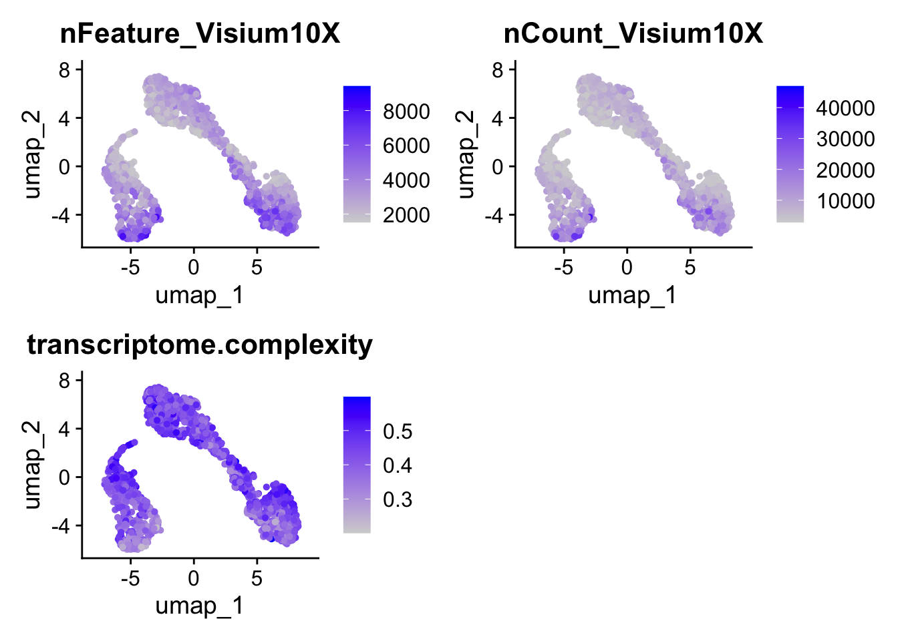
- What do you think of the results? How does it compare to your expectation also based on your previous experience with UMAP applied to single-cell data? Where you expecting more or less heterogeneity and diversity?
Grouping spots together with clustering
Here we will try to group spots together based on their transcriptional similarity using specific clustering algorithms! This procedure enables us to see whether we can unsupervisedly dissect the transcriptional differences within the data. In order to do so, we partition the underlying graph connecting similar spots to one another (which we built with the FindNeighbors function) into islands of spots that we term clusters.
💡 Note that we are still not considering spatial information for this analysis! We are purely evaluating transcriptional similarity!
One of the main parameters to consider here is the clustering resolution, this determines the granularity of our final clustering. In other words, higher resolution often leads to smaller and finer clusters while lower resolution values return broader clusters. The definition of this parameter is dependent on a series of factors including the type of data, its source and biology (i.e. a tumor vs. a more homogeneous sample) and our knowledge of the sample we are analyzing. Usually clustering results are also interpretable based on heuristic metrics used to evaluate stability, the silhouette score being one of them.
Let’s now find clusters of spots in our data!
sp <- FindClusters(sp, resolution = 0.8)Modularity Optimizer version 1.3.0 by Ludo Waltman and Nees Jan van Eck
Number of nodes: 1339
Number of edges: 42820
Running Louvain algorithm...
Maximum modularity in 10 random starts: 0.8047
Number of communities: 9
Elapsed time: 0 secondsQ14. How many clusters do you get?
Q15. How many spots do we have per cluster on average?
Q16. Represent cluster identities on a UMAP and on a spatial plot, does this match your expectation? Do you see clusters also grouping spatially?
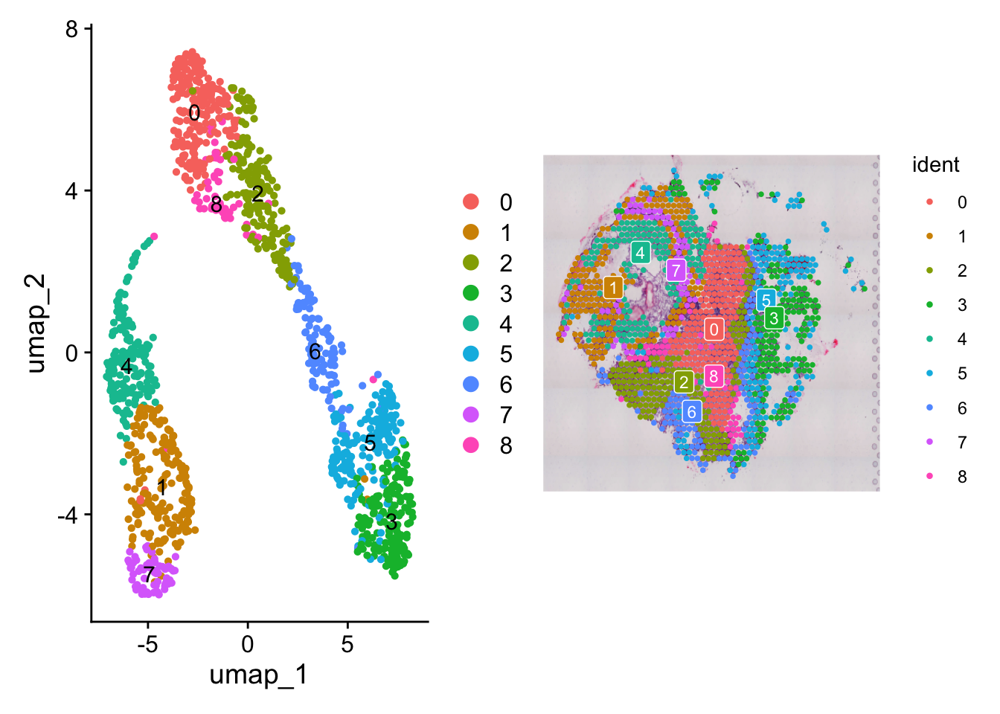
These are my cluster identities for the top 5 cells in the data:
AAACAAGTATCTCCCA-1 AAACCGGGTAGGTACC-1 AAACCGTTCGTCCAGG-1 AAACCTCATGAAGTTG-1
5 4 2 1
AAACGAGACGGTTGAT-1
0
Levels: 0 1 2 3 4 5 6 7 8Find differentially expressed marker genes
Once we have identified a grouping for our spots, we can move on to check which are the transcriptional differences across these groups. The goal of this procedure is to start to get a feeling for the biology behind the clusters we have identified. We can use the FindAllMarkers function to compute all marker genes for all spot clusters against all other spots at once. What this function does under the hood is to perform a statistical test (several are implemented in Seurat) for each gene and return the corresponding p_val and log2FC which describe the signficance and magnitude of the gene expression change in the categories we selected (i.e. cluster 1 vs all others).
# With `only.pos` we tell the software to only report genes with positive change in each cluster compared to all others
markers <- FindAllMarkers(sp, only.pos = TRUE)Q17. Check out the top 5 markers for each cluster of spots, is there any marker you recognize?
Q18. Plot the expression of one of the main markers across clusters like shown below (hint: use the VlnPlot function)
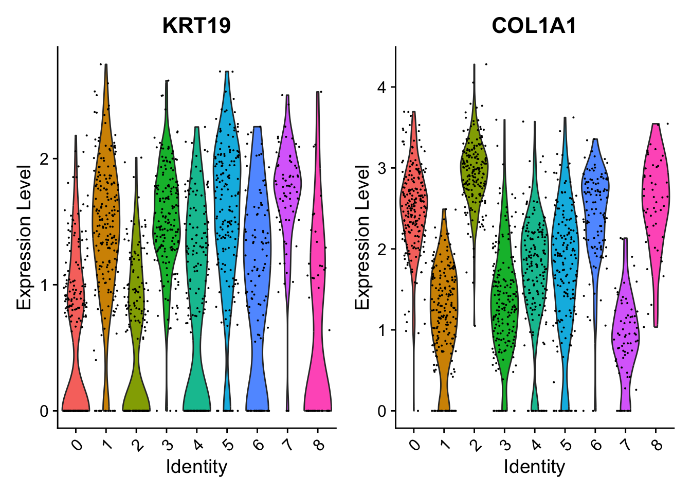
Q19. Plot the expression of one of the main markers on a UMAP embedding like shown below
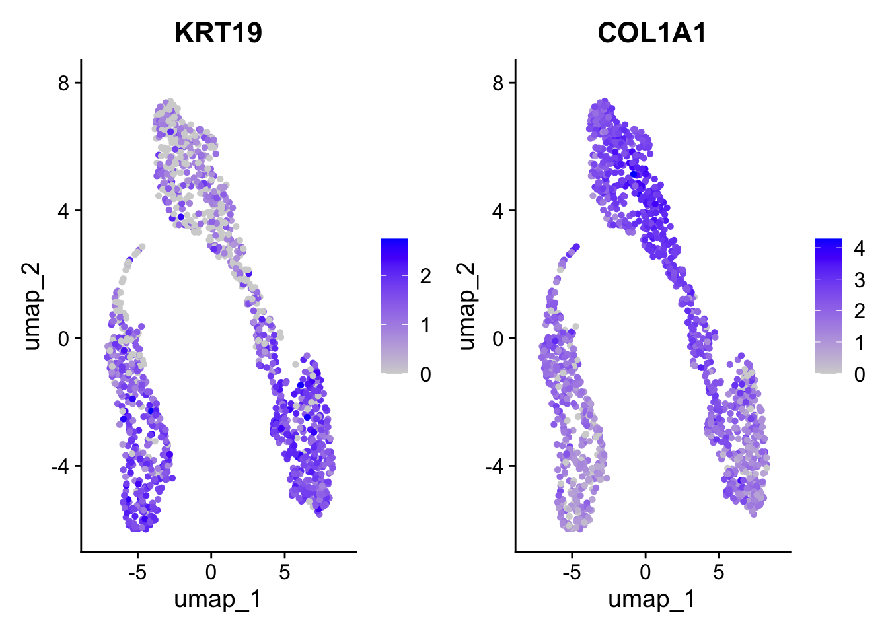
Q20. Visualize the expression of the top 5 marker genes per cluster in a heatmap (hint: use the DoHeatmap function)
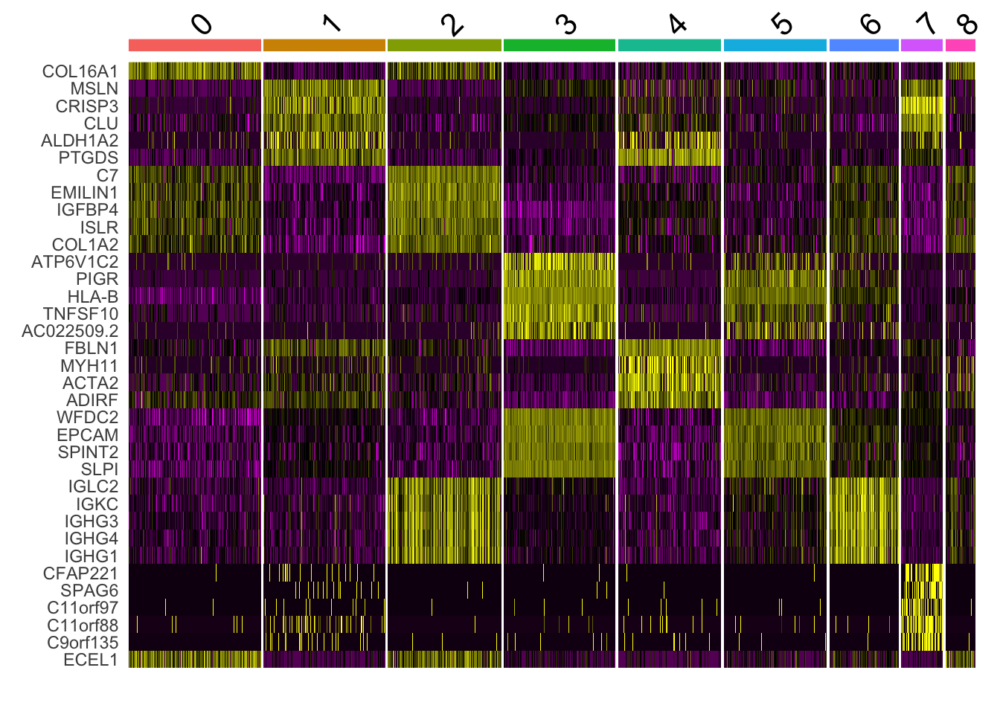
🤔 Based on the very technical nature of the technology, would it make sense to expect clear-cut marker genes for each cluster specifically related to cell types?
Cell type enrichment of spots
As previously discussed, Visium assays gene expression in single larger-than-cells spots, meaning that each observation we get will contain mixed transcriptomes coming from neighboring cells. This can complicate downstream analysis when trying to infer cell-cell relationships and phenotypes. For this reason, there exist approaches aimed at dissecting this spot heterogeneity by either deconvolving the transcriptional signal of spots into contributions of single cell types or by evaluating the enrichment of cell type marker genes in the transcriptional profile of each single spot. The former are based on “pure” transcriptional profiles usually distilled from a matched sample profiled with scRNA-seq, where cell clusters can be obtained and signals averaged. The latter approach is less computationally expensive, does not require scRNA-seq, but is entirely knowledge-based and less precise.
For the sake of this workshop, we will perform the second approach in the form of the clustermole package. This package contains a collection of cell-type specific marker genes coming from various databases whose activity can be avaluated across spots. In the background, we are essentially running a GSEA analysis on each single spot (ssGSEA) across all the available marker genesets in the database.
# First extract normalized counts from our seurat object
DefaultAssay(sp) <- "Visium10X"
counts <- GetAssayData(object = sp, layer = 'data') %>% as.matrix()
# Run `clustermole`
enr <- clustermole_enrichment(counts, species = "hs", method = 'ssgsea')
# Filter results, keep only representative celltypes of interest OR celltypes in the `organ` Ovary
ct_to_match = c('Macrophage','CD4+ T cell', 'CD8+ T cell', 'Mesenchymal cell', 'Epithelial cell', 'Endothelial cell', 'Fibroblast')
enr_wide <- enr %>% filter(species == 'Human') %>% filter(organ == 'Ovary' | celltype %in% ct_to_match) %>% tidyr::pivot_wider(.,id_cols=c("cluster"), names_from = 'celltype', values_from = 'score', values_fn = mean, values_fill = 0) %>% tibble::column_to_rownames("cluster")
# Create a new column in metadata with labels from the enrichment (each spot is labelled for its highest score)
enr_wide$celltype <- names(enr_wide)[max.col(enr_wide)]
# Add them to metadata
sp@meta.data <- sp@meta.data %>% merge(enr_wide, by.y=0, by.x=0, all.x=TRUE) %>% tibble::column_to_rownames("Row.names")Let’s now plot spatially the scores for specific gene signatures of interest like shown below!
# Plot in space
p1 <- SpatialFeaturePlot(sp, features = c('Epithelial cell (Ovarian Cancer)'), pt.size=3)
p2 <- SpatialDimPlot(sp,group.by = 'celltype', pt.size=3) + scale_fill_brewer(palette = 'Paired')
p1 + p2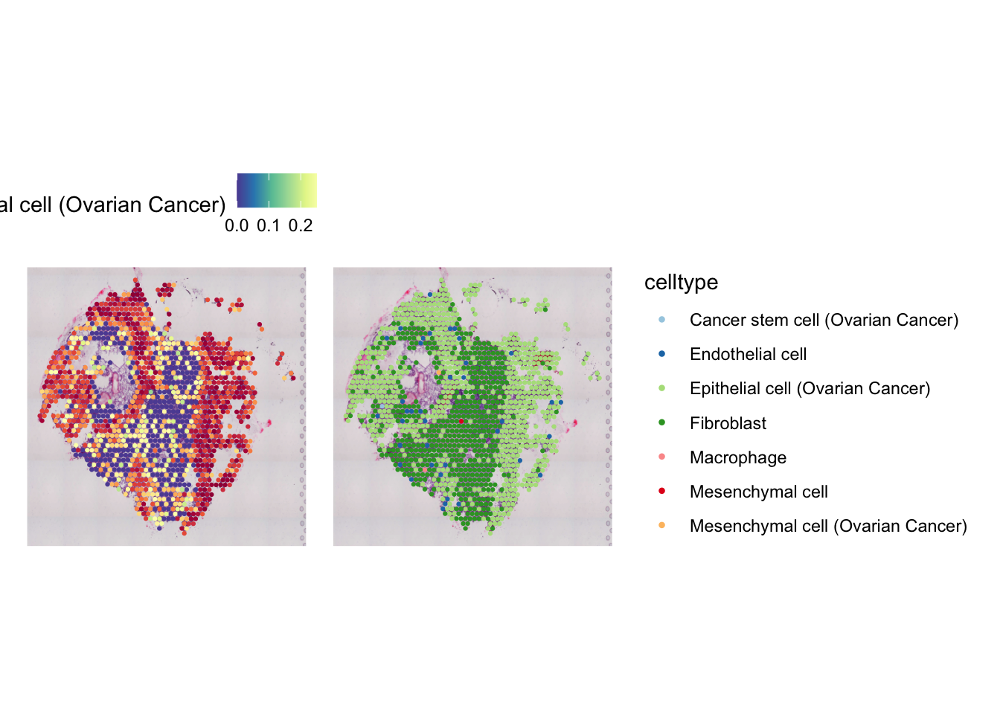
- Draw a barplot using
ggplot2highlighting the proportions of celltypes predicted across clusters in the sample
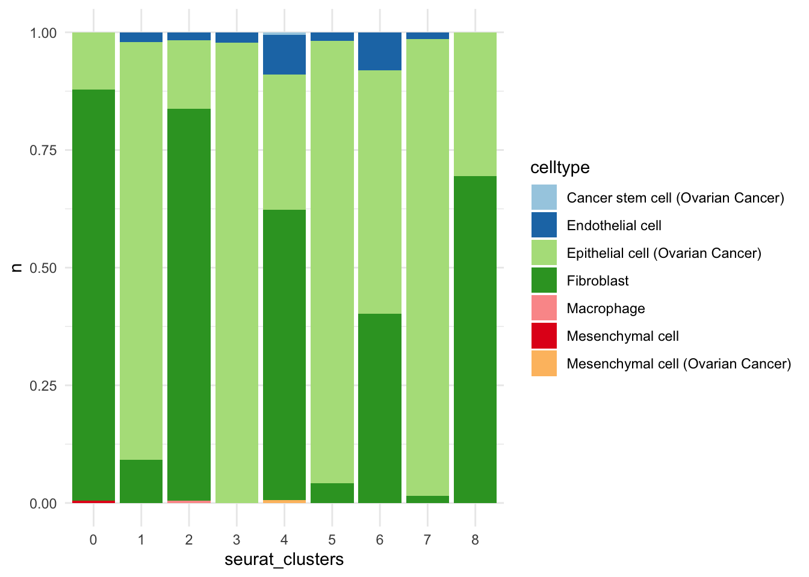
- Based on the results above, can we confidently highlight a “tumor” cluster and a “stromal” one?
Now we can move to additional downstream analyses which will also take into account spatial coordinates of spots on the sample!